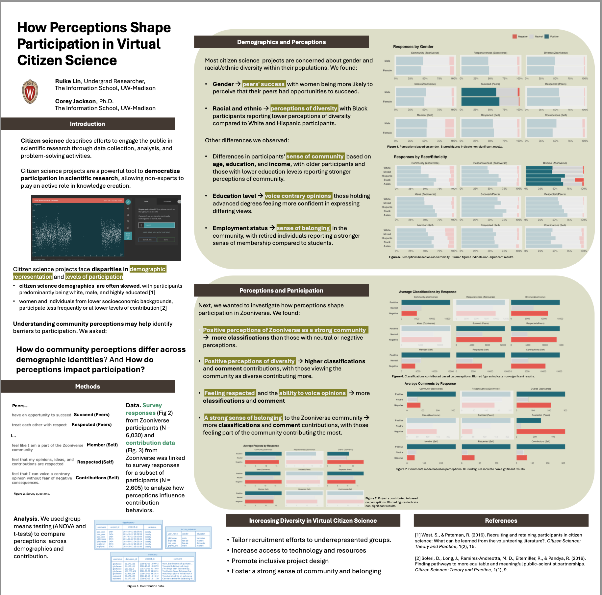

Project 1:
As an Undergraduate Research Assistant, I have been involved in analyzing user engagement trends and demographic disparities in NASA-sponsored citizen science projects.
| Category | Description |
|---|---|
| Project Focus | Analyzed user engagement trends and demographic disparities in NASA-sponsored citizen science projects using R. |
| Data Analysis | Processed and analyzed large-scale survey datasets (6,000+ responses) using dplyr, data.table, and lubridate, creating interactive visualizations with ggplot2, DT, and kableExtra. |
| Statistic Methods | Applied statistical methods, including Chi-square and ANOVA tests, to examine participation patterns across demographic groups. |